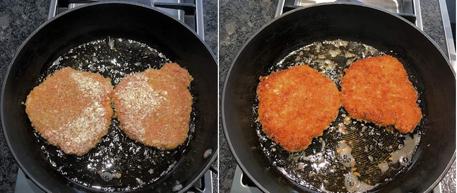
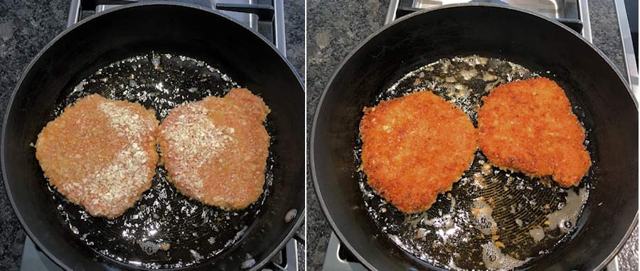

- Peeler
- Baking Sheet
- Medium Pot
- Paper Towels
- Zip-close bag
- Medium Bowl
- Large Pan
- Small Bowl
- 8 Carrots
- 1 Thumb of garlic
- 2 Scallions
- 1 Cup of Panko Bread Crumbs
- 2 Tsp Garlic Powder
- 24 oz of Pork Cutlets
- 8 TBSP of Katsu Sauce
- Kosher Salt
- Black Pepper
- Vegetable Oil
- 2 TBSP Butter
- 1 Cup of Jasmine Rice
Utensils
Ingredients
Instructions
- Adjust oven rack to top position and preheat oven to 425 degrees fahrenheit.
- Wash and dry all produce.
- Trim and peel carrots. Then cut carrots on a diagonal into ½-inch-thick pieces.
- Peel, then mince or grate ginger.
- Trim and thinly slice scallions, separating whites from greens.
- Toss carrots on a baking sheet with a large drizzle of oil, salt, pepper, and any other seasoning you like (I add some garlic powder and paprika).
- Roast on the top rack until tender, around 20-25 minutes.
- After putting carrots in the oven, heat a drizzle of oil in a medium pot over medium-high heat.
- Add ginger and scallion whites.
- Cook until fragrant, usually around 1 minute.
- Stir in rice and 1 and 1/4th cups water.
- Bring to a boil, then cover and reduce heat to low.
- Cook until rice is tender, usually 15-18 minutes.
- Keep covered off heat until ready to serve.
- Wash off pork and pat it dry with paper towels.
- Place panko, garlic powder, salt(around 1tsp), and pepper in a gallon-size zip-close bag.
- Place sour cream in a medium bowl: add pork and turn to evenly coat.
- Add coated pork to the bag with seasoned panko and seal to close. Shake until pork is evenly coated. Tip: You may need to move around cutlets in the bag pressing with your hands to spread out panko and make it stick.
- Heat a ⅓-inch layer of oil in a large pan over medium high heat. Once oil is shimmering and hot enough that a pinch of panko sizzles when added to the pan.
- Add coated pork to the pan. Cook until panko is golden brown and pork is cooked through, around 2-3 minutes per side.
- Transfer to a paper-towel-lined plate.
- Place katsu in a small microwave safe bowl: microwave until warmed through, around 30 seconds.
- Fluff rice with a fork: stir in 2 TBSP of butter, and season with salt and pepper.
- Serve
Prep
Roast Carrots
Cook Rice
Coat Pork
Cook Pork
Finish and Serve
Websites references
- This website is very simple and efficient in the ways it shows its information. It only gives the barebones in what the meal is, how to make it, and what you need to make it and I think it shows off really effective yet minimal design.
- This website is very cute in its design and makes the whole experience very pleasant. With nice colors, lots of images, and color coded titles, this website is really fun to maneuver around which is great for a website that has a recipe that could take up to 3 hours. One grip I have is the text is in pretty big blocks that aren’t too well spaced out which is making it hard for me to read personally.
- This website feels very trendy in the way it portrays itself but it kinda loses focus on readability. It has very large paragraphs for each instruction which can be hard to navigate through and when scaled down, the website crams all its information onto the page without proper scaling which makes it harder to read.
Recipe Websites
- I chose his website because I really liked the simplicity in its design. When it comes to color choice, the designers only used a yellow, black, white, and grey, and I think it makes a super cohesive design even when broken up into many parts. Something I also like is that, as you scroll down, each part of the website is broken up into either a white background or a light grey background to help the audience differentiate between sections.
- This website uses images in a really beautiful and dynamic way. I don’t plan on using this many images but I think it conveys its point in a very visual and harmonious way that I would love to try and replicate in my website.
- This website divides its content in a really clear and pretty way. As you scroll down, each section has a different color palette and use of images letting the user know exactly what that section is. This would be really helpful for going back and looking at a recipe as people would be able to know where in the recipe they are.
Non-Recipe Websites
Image References
 
